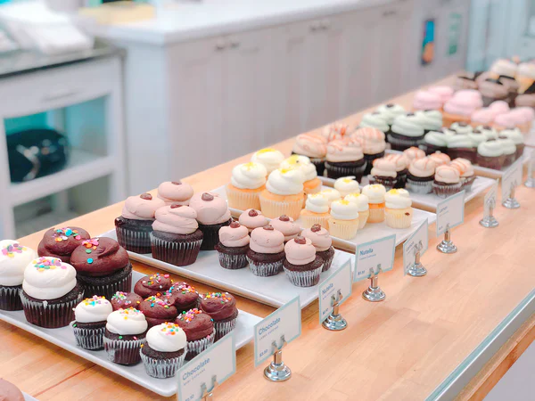

Welcome to Dakota's Bakery!
Dakota's Bakery is a upcoming family owned shop located Downtown Chattanooga. We have options to fix everyones wants and desires. We do custom orders for any birthdays or weddings. My family and I are very fortunate to be able to open a shop in our home town doing what we love most, which is baking and making our customers visions come true.
Something that my family and I have decided on is that we are going to be donating a percentage of our profits to local organization called More4kids. This organization is for childen in homes with abusive relationships at home and to help them get in a better environment.